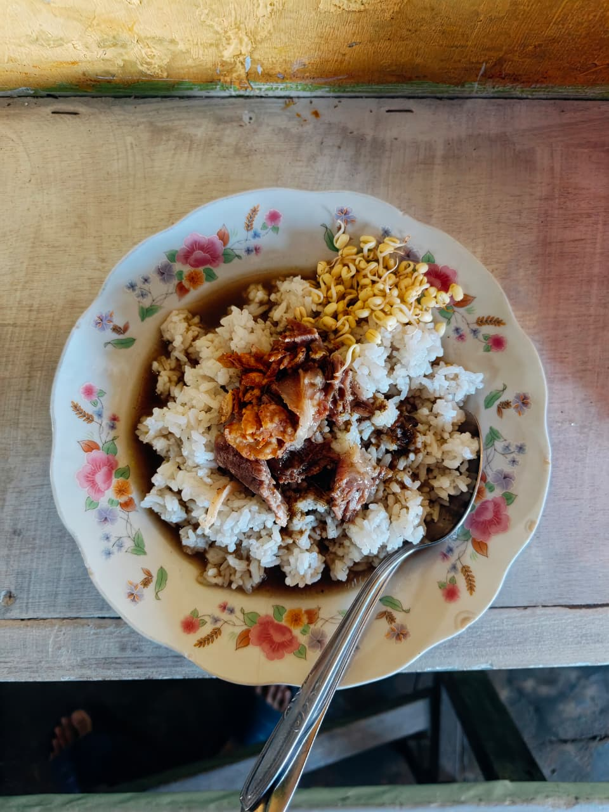
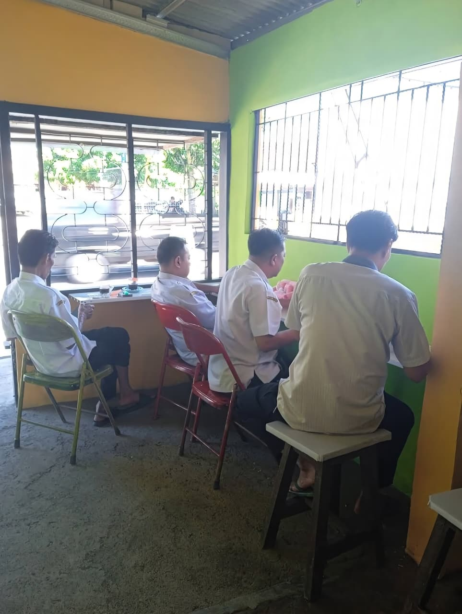
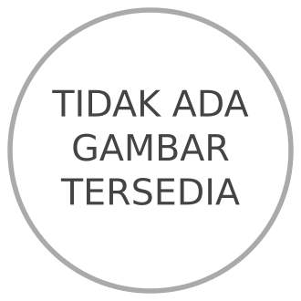

Rawon
Rp7.000sup daging sapi khas Jawa Timur yang memiliki kuah berwarna hitam pekat dengan cita rasa gurih, rasi, dan sedikit manis.
Sejak 2025 · Warung Nasi Khas Jawa Timur
Obat Kangen Masakan Ibu.
Menu khas Jawa Timur dengan cita rasa asli yang konsisten, Segar bahannya, asli bumbunya, dan Cita rasa tradisional yang selalu terjaga.

Tentang Kami
Warung Makan Mama Kafi berawal dari usaha kuliner kecil di pinggir jalan, tempat Mama Kafi menyajikan hidangan hangat untuk warga sekitar dan para pekerja. Kini, warung kami menjadi tempat singgah favorit di pinggir Jalan S. Parman
Kami percaya makan enak tidak harus mahal, dan suasana hangat adalah bumbu yang tidak boleh ketinggalan di setiap piring yang kami sajikan.
Galeri


Menu Makanan

Jam Operasional
Status buka/tutup diperbarui otomatis berdasarkan waktu perangkat Anda saat ini.
Lokasi
Jl. Letjen S.Parman No.89, Tegal Boto Kidul, Sumbersari
Kabupaten Jember, Jawa Timur 68121
Ulasan Pelanggan